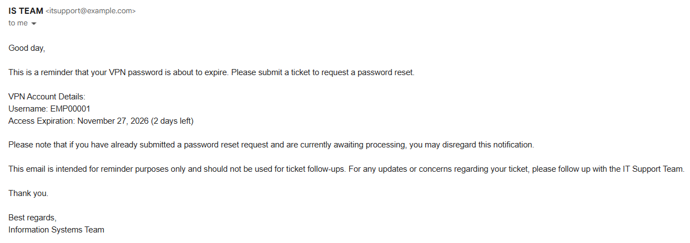
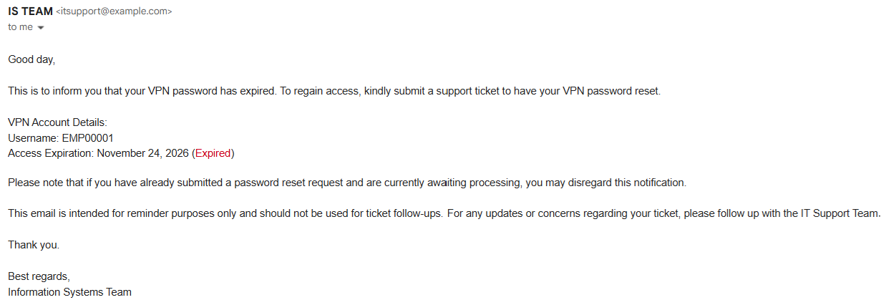
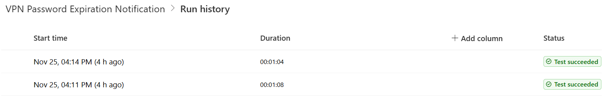

Days left calculated in the flow
The number of days left is worked out inside the flow each time it runs, so every decision is based on today's date.
A scheduled Power Automate flow that checks every VPN user each day, warns them before their password expires, and notifies them again once it has.
VPN passwords expire on a schedule, and users need a reminder before that happens. Chasing each user by hand is repetitive, so this flow does it automatically and keeps a record of every notice in the user list. It covers around 190 employees, and the IS Team updates the Excel user list weekly.

The complete workflow: a daily check, a loop through the VPN user list, and separate paths for passwords nearing expiry or already expired. Click the image to view it full size.
There is one email for passwords that are about to expire and another for passwords that already have.

Upcoming expiry: sent when a password expires in 3 days or less, giving the user time to update it.

Expired password: notifies the user that the expiry date has passed and action is required.
The flow is scheduled to run every day. These are two test runs with sample data, and both succeeded.

Run history: two successful test runs using sample data.
Each decision below answers a real question about how reminders should work.
The number of days left is worked out inside the flow each time it runs, so every decision is based on today's date.
Users get an early warning when 3 days or fewer remain, and a separate message once the password has expired, so each email says exactly what the user needs to do.
Both notice paths update the Password Notification Remarks column, so the sheet shows which notice each user has received.
Users with plenty of time left are left alone, and the labeled step makes it clear the empty path is deliberate, not a missing step.